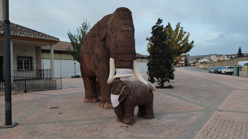
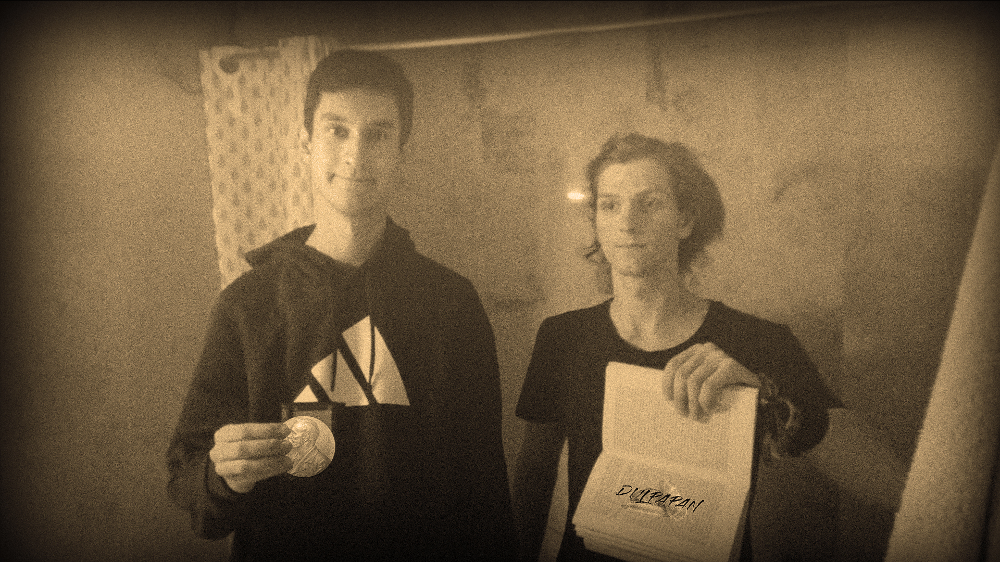
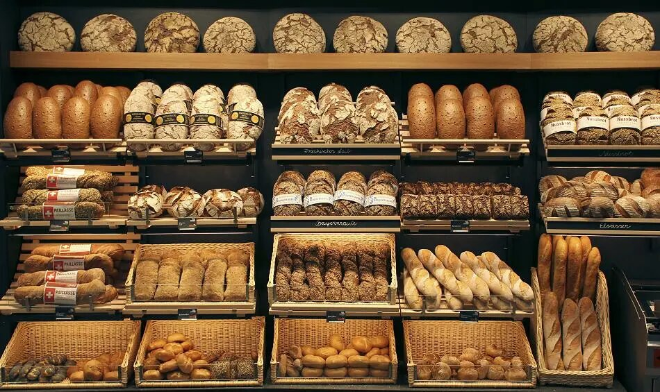

► Nuestra historia comienza en 1955, en el Padul.
Decidimos empezar a crear pan por amor a su concepto.
Pensamos que la gente merece la mejor calidad, y en
cuanto al pan se refiere, no podía ser la excepción.
Desde entonces conservamos nuestra esencia.
Además, para las ocasiones especiales (que nunca falten) disponemos de los más elaborados
surtidos de pan elaborados por nuestro personal.
► Para los más atrevidos y exquisitos degustadores, existe un Personalizador de Pan
en el que usted mismo puede elegir la forma del pan, el cereal del que está hecho,
¡e incluso puede optar por añadir semillas y toppings!, y todo ello con la teconología de Scratch3™.
a ► Dulpapan empresa obtuvo el premio Nobel de la paz
en 1971 por acabar con el hambre a nivel municipal en la
localidad granadina del Padul en tiempos de posguerra.
Nuestros grandes fundadores lo recogieron orgullosos de
un trabajo bien hecho.
 
► Nuestro pan está elaborado con la mejor calidad para
que el cliente disfrute en cada bocado. Nuestra selección
está escogida cautelosamente, y para más información
tenemos la pestaña "Contacto".
que el cliente disfrute en cada bocado. Nuestra selección
está escogida cautelosamente, y para más información
tenemos la pestaña "Contacto".
 |
♣ Información |
♣ Tienda |
♣ Personalización |
♣ Contacto |
 |
» Redes Sociales « |